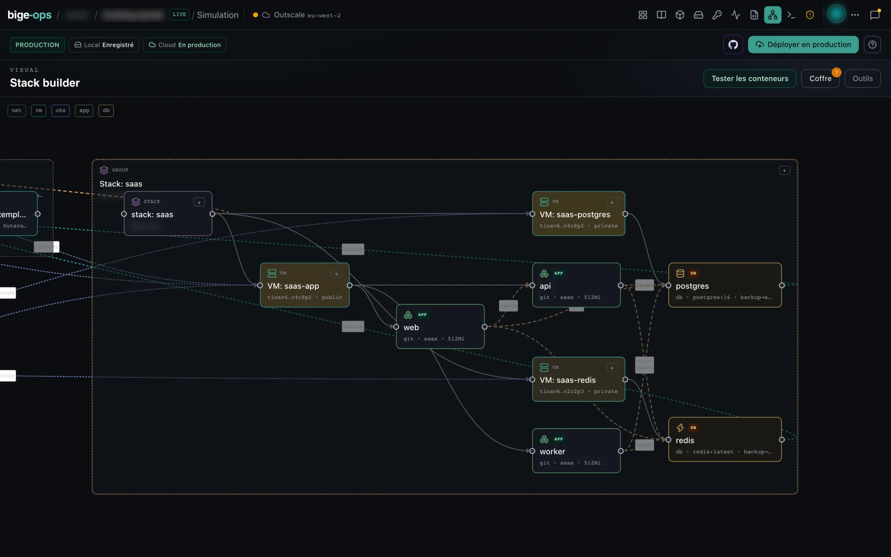

Pars des ressources prévues.
L’estimation dépend de la topologie et des ressources de ta simulation. Elle évolue lorsque tu modifies la stack.
← Accueil · Estimation · Sait / ne sait pas
BIGE-OPS / FONCTIONNALITÉS
Projette ton budget mensuel, analyse les postes de dépenses et consigne tes arbitrages. Prépare les ajustements de ta stack pour la suite.

DANS L’APP / PARCOURS GUIDÉ
L’estimation dépend de la topologie et des ressources de ta simulation. Elle évolue lorsque tu modifies la stack.
Compute, stockage et réseau sont présentés séparément. Relis les hypothèses et le catalogue utilisé plutôt qu’un total isolé.
Ajuste le dimensionnement et compare les estimations. Le résultat reste indicatif : ton fournisseur facture ton usage et applique tes conditions.
Chaque ressource compte
L’estimation est calculée sur ton poste, à partir du catalogue public Outscale : celui embarqué dans l’app, ou celui que tu synchronises depuis l’API. Elle te donne, dans l’app, une estimation mensuelle hors taxes de ta simulation, ligne par ligne, avant toute dépense.
bige-ops pricing catalog-sync (ou Sync sur la page Tarifs)
appelle ReadPublicCatalog,
l’API Outscale qui publie la grille de prix d’une Région, sans
authentification. Le résultat remplace le catalogue embarqué ;
bige-ops pricing catalog-status indique la source en cours.
Un type de VM s’écrit tinav6.c4r8p2 : génération de CPU,
vCPU, RAM, niveau de performance. Outscale facture le vCPU à l’heure
selon le couple génération × performance, et la RAM au
GiB, au même prix quelle que soit la génération. bige-ops décompose le
type, applique le tarif de la Région et ramène le tout au mois
(730 heures). Le même calcul s’applique aux nœuds OKS.
| Ligne | Base de calcul |
|---|---|
| VM | vCPU (génération × performance) + RAM, GPU si tu en déclares un |
| Disque racine | taille et type réels : gp2, ou io1 avec ses IOPS |
| Volumes de données | taille et type, IOPS comprises en io1 |
| LBU | à l’heure |
| NAT service | à l’heure, quand le NAT est activé |
| IP publique non associée | à l’heure |
| OKS | control plane à l’heure + type et nombre de nœuds |
| Bucket OOS | au GiB stocké, quand tu renseignes une taille |
| Snapshots | dans l’estimation d’inventaire |
L’estimation s’appuie sur la grille publique, au tarif à la demande. Ce n’est pas un devis : elle sert à comparer deux layouts, à choisir un type Tina ou un type de volume, et à connaître l’ordre de grandeur avant l’apply. Une remise négociée avec Outscale s’applique en plus, sur ta facture. Pour un devis, des engagements ou des conditions propres à ton compte, la référence reste la grille publique Outscale et ton interlocuteur Outscale.